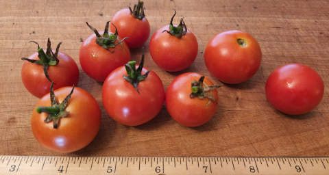

Macroexpand
Macroexpand, Inc. is a research/concept-stage software development company headquartered in the great state of West Virginia. Our primary focus is on data analytics and modeling in functional programming languages. Given existing functional programming ecosystems, a focus on the practical applications of the higher-order abstractions possible within them is a secondary priority.
The name Macroexpand comes from the function of the same name in ANSI Common Lisp. This function is also implemented in other Lisp variants, including our primary language of choice, Clojure.
Macroexpand also offers a range of other general business services and serves the needs of the local community near our 20 acre property in the mountains of West Virginia. Some of the latter are now being experimentally provided online as well. This may seem eclectic, but the collection of services as a whole can be thought of as the forms of the high-value excess capacity we currently have available and are happy to supply the outside world. Feel free to explore those services below.
Services
Freelance software services
Macroexpand's specialty is specifically in the intersection of functional programming (and adjacent fields) with data processing (specifically ETL, modeling, analysis, and data-related system architecture). Consider Macroexpand if you have data of some size and want to explore the use functional languages operating against this data.
A subset of services available:
- If your corporation has a data analysis problem, Macroexpand knows how to extract meaning from it (assuming there is any).
- If your domain can be formalized and reasoned about, we can model it. We have in-house specialization in the novel application of language theory, type theory (particularly dependent types), provably correct software, and automated theorem proving.
- General, temporary-CTO services, centering the development side of your business around functional programming, crafting a strategy for team migration/formation, full-spectrum theory-crafting, and similar assistance are available.
Preference on our end is for a service agreement composed of the delivery of some whole number of work units, each equivalent to a weekly full-time effort. These may or may not line up with calendar weeks, conditional on available bandwidth.
General business services
Also available are services related to technical writing, editing, ghostwriting, and assistance with academic and industry papers. A list of projects completed by the company member providing these services, herself a published author, is available upon request.
Macroexpand also has experience in patent research, and can complete a professional-grade research package centered around your prospective intellectual property in any patent category. Varying industry-standard grades of research depth are available. This can be a thorough yet cost-effective preliminary step in your patent pre-application procedures.
Heirloom seeds
The members of Macroexpand are committed to the concepts of food independence, small scale farming without pesticides, and zero waste to the extent possible in the modern world. We feed ourselves, but also provide food products to our local community. The fruits and vegetables we grow here are all of the heirloom variety, and seeds from them are now available here online, ready to be mailed to you.
Of particular note are 2 custom-made and completely unique lineages, now reasonably stabilized and available for distribution. Those are:

The Bromato F4 (4th filial gen): A select cross-breeding of popular strains of cherry and slicer tomatoes. Grows to about 1-1.25" in diameter. Starts producing early in the season and perpetuates a consistent output all year. A versatile size, great in salads and focaccia. Very prolific.
The MyThai F3 (3rd filial gen) pepper: A rare, random cross between Burpee's mini-Thai and early Jalapeño peppers, this 1-1.5" pepper ripens late season to a bright red. Retains full Thai pepper flavor. Heat levels are high for a Thai pepper, estimated roughly at 100000 SHU or more. With proper pruning and care, it can also serve as an indoor ornamental pepper.
Check back here for the 2023 seed list, coming in Fall 2022.
Leathercraft
Hand-crafted, hand-stitched leather goods and crafts are available for commission. Our locally popular leather goods are also rarely available for immediate purchase at the Romney Co-op in Romney, WV, sold under the initials "A.G." and also under the brand name "Stripey's Creations".
Goods available include (but are by no means limited to):
- Watch straps in 22-14mm lug width, sized perfectly to your wrist circumference, tapered or not, and with your choice of buckle metal type.
- Cute, complex, and creative keychain designs, like leather bees, frogs, cats, dogs, deer, etc.
- Archery bracers.
- Leather pouches of all sizes and shapes.
- Belt-mounted cartridge carriers in your favorite hunting cartridge, in capacities between 2 and 6 rounds.
The above items and more can be bought or ordered with your choice of leather color and type, including exotic leathers like salmon and toad leather. All these leather goods are produced here by hand, in extremely limited quantities, using un-powered hand tools, and with completely original designs. Each piece is entirely unique and there will never exist another item like it. Lead times may vary between 1-3 months depending on supplies availability and higher priority work.
Contact
Feel free to contact us for any of the services/products listed here, or even if you feel compelled to explore us as an option for things not listed.
bm3719 ατ tutanota · com